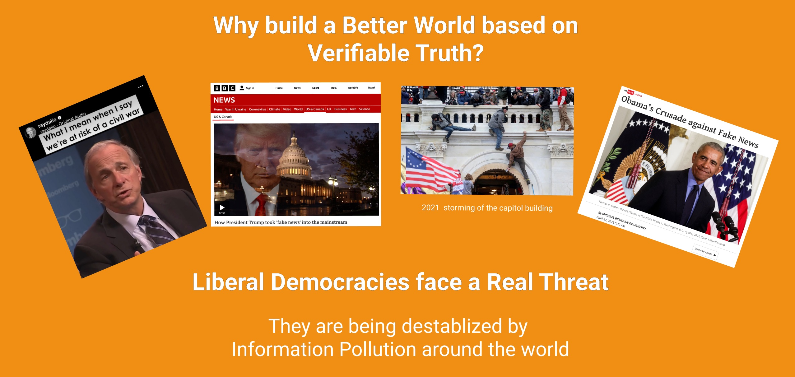
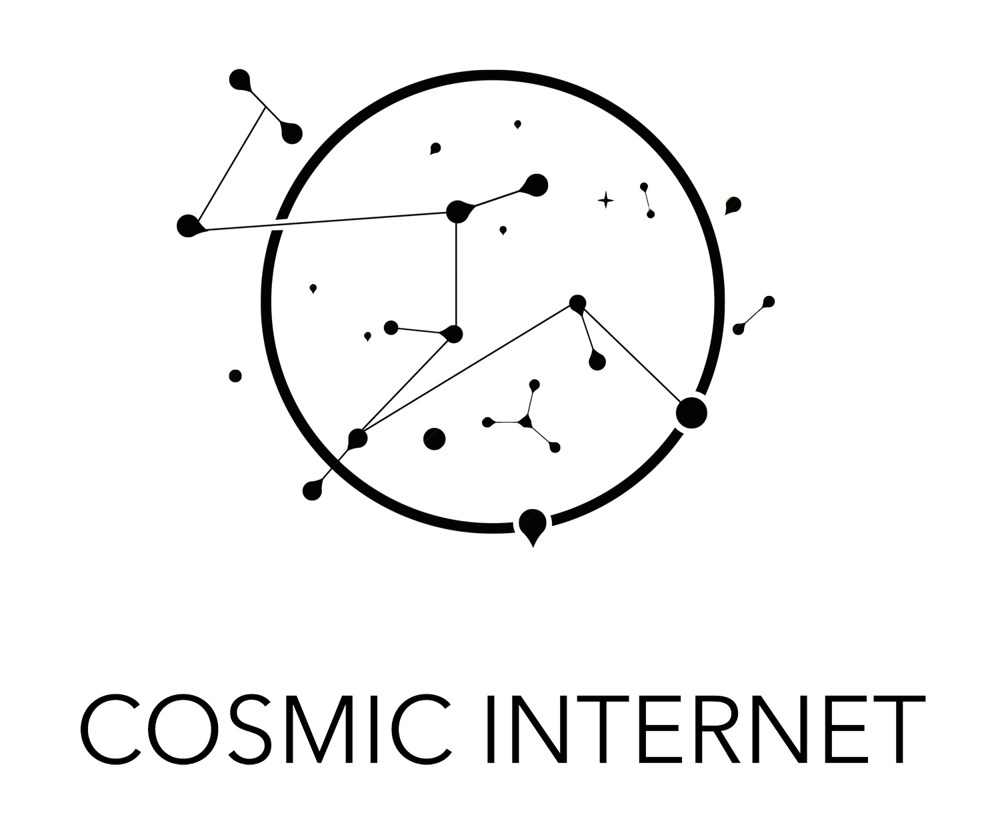
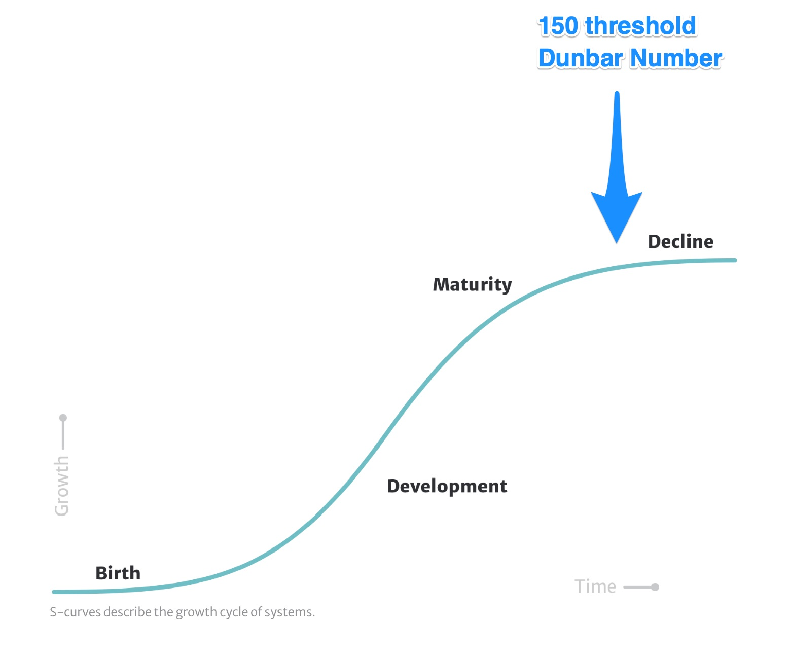

Its has been really truly amazing experience to observe the population growth rate of TrueSight DAO ever since its inception in August 2021. The catalysts for its inception was the growing problem of fake news which have finally gained enough moment to the point of destabilizing liberal democratic systems worldwide. The most recent symptom was the storming of the US Capital Building on Jan 6th 2021.

This problem resonated with a lot of folks when I first spoke to them about it. In response, many have rallied their efforts to support its purpose, mission and vision.
Our Purpose is to build a Better World based on Verifiable Truth
Our Mission is to fight Fake News by providing individuals with the clarity to make critical decisions
Our Vision is a universal credibility protocol that allows subject matter experts to publicly establish their credibility using blockchain as a solution
The vision itself was a very tall order and the solution itself unclear at the onset. An initial investigative project was launched with the goal of discovering a solution that would best bring about our desired social change. This project became the focusing point by which all community members actively channeled their efforts.
To provide public recognition and encourage continued voluntary grass-root contributions, as well as to ensure transparency and accountability, members are awarded governance tokens in exchange for time, effort and money they contributed to further our cause. These voluntary contributions are recorded on our contribution ledger.
Due to the inherent viral loop that was baked into our operating model, the population size of our contributor grew rapidly. Along with its growth were serendipitous magical moments such as when our DAO got invited to present our cause at various Conferences and Key notes
Davos 2022 - House of Balance Keynote
As the population size of active contributors in our project grew beyond the Dunbar Number of 150, we started observing symptoms of decline that closely resembled the tail end of an S-curve.
Symptoms of organic network decline come in the form of high levels of frustration/stress due to indecision, miscommunication and misalignment. The underlying root cause of it were differing world views and operating styles.
Organic Network starts exhibiting signs of decline as it scales pass the Dunbar Number
As the population size of active contributors in our project grew beyond the Dunbar Number of 150, we started observing symptoms of decline
We tried multiple different approaches to get around the network decline phenomena while still abiding with our values
Our Values are Autonomy, Integrity and Diversity
Our most recent approach that seemed to work is Project Forking.
 A contributor can choose to fork a new child project off the original parent project to explore a new direction
A contributor can choose to fork a new child project off the original parent project to explore a new direction
Socially this approach was modeled after traditional Amish practices. In traditional Amish societies when the population size of a village grew past 150, a portion of the village members will self select, up and migrate to setup a new village nearby one day.
An Amish family observed traveling to a nearby village on their horse cart
{kind=link}
We introduced two types of Forking. These are the Hard Fork and the Soft Fork. Conceptually they are similar to codebase forking activities on GitHub
The characteristics of the Soft Fork are
- Contributions to a child project is still recorded on the parent project's ledger but labelled differently- Contributions to the child project are still awarded governance tokens associated with the parent project - Eventual revenue generated by child project are held in the parent project's vault- The parent project acts as the sponsor of the child project
The characteristics of the Hard Fork are
- Contributions to a child project is recorded on its own branched off version of the paren project's ledger - Contributions to the child project are awarded governance tokens in the child project. - Revenue generated by child project are held in its own project vault- Child project has claim independence from the parent project
Project Forking within a DAO provides additional benefits on top of solving the original set of problems, these are
- ensures all prior contributors' efforts are acknowledged and equitably accounted for in new descendent projects - creates the space to explore into new terrains for solutions discovery- creates more surface area to attract engage new and existing volunteer efforts to fight "Fake News" - spreads DAO risk over multiple projects as opposed to consolidating all eggs in one basket (a single project)- allow DAO to remain decentralized while still enjoying the benefit of a strong core leadership for each project
There are two types of forking in DAOs, the hard fork and the soft fork. They are modeled after traditional Amish society and functions to get around the Dunbar Number constrain and function quite similar to codebase management features on GItHub
With this new Forking mechanism in place we are now open to enlisting more members to join our movement to save our Liberal Democratic Societies!

Support Us!